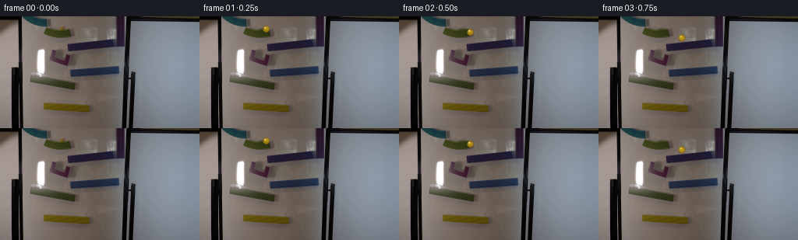
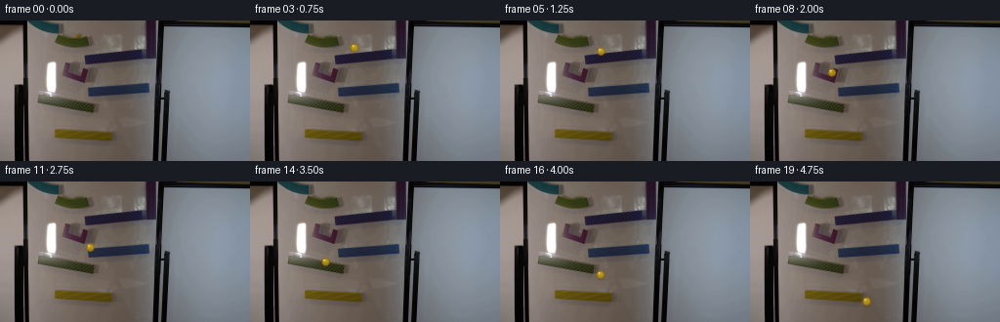
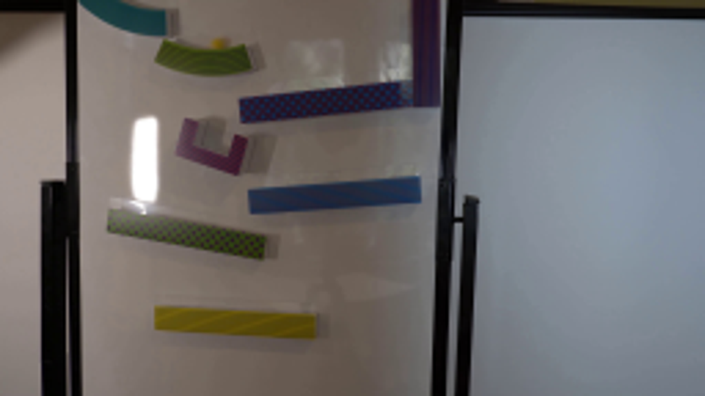
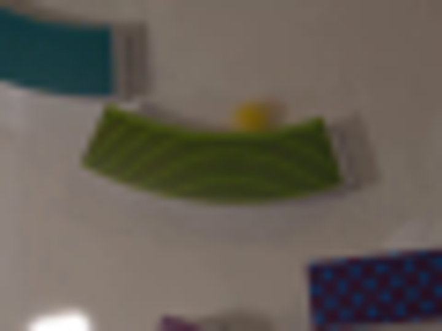
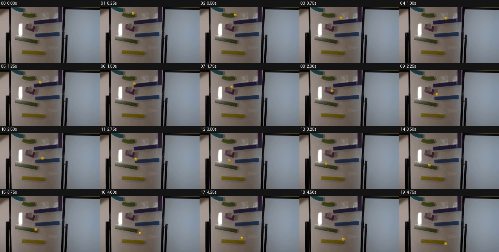

CODING AGENTS AS PIXEL WORLD MODELS
traex/GPT-5.6-Sol · 0105
点击播放 · 原生 RGB 像素
逐轮保存的候选
回放视频、检查图与代码变化。
每份候选均可单独播放。实际图片检查记录在下方工具轨迹中。
候选 01播放与检查图
点击播放 · 原生 RGB 像素


展开代码变化
--- 上一保存版本
+++ 本次保存版本
@@ -0,0 +1,123 @@
+from pathlib import Path
+import cv2
+import numpy as np
+from PIL import Image
+import artifact_io
+
+CASE_DIR = Path(__file__).resolve().parent
+N, H, W = 20, 144, 256
+
+
+def remove_starting_marble(rgb):
+ """Make a clean plate only where the initially resting 8 px marble was visible."""
+ bgr = cv2.cvtColor(rgb, cv2.COLOR_RGB2BGR)
+ mask = np.zeros((H, W), np.uint8)
+ # The yellow sphere is centred just above the small green entry ramp.
+ cv2.ellipse(mask, (80, 15), (6, 6), 0, 0, 360, 255, -1)
+ # Avoid unnecessarily replacing neighboring image content.
+ clean = cv2.inpaint(bgr, mask, 3, cv2.INPAINT_TELEA)
+ return cv2.cvtColor(clean, cv2.COLOR_BGR2RGB)
+
+
+def alpha_over(dst, color, alpha):
+ a = np.clip(alpha, 0.0, 1.0)[..., None]
+ dst[:] = np.clip(dst * (1.0-a) + np.asarray(color, np.float32) * a, 0, 255)
+
+
+def render_marble(frame, cx, cy, radius=4.35, vx=0.0, vy=0.0, airborne=False):
+ """Render a small translucent yellow glass sphere in the soft source optics."""
+ out = frame.astype(np.float32)
+ yy, xx = np.mgrid[0:H, 0:W].astype(np.float32)
+
+ # Very restrained directional motion smear at 4 fps, only in free flight.
+ speed = float(np.hypot(vx, vy))
+ if airborne and speed > 8:
+ ux, uy = vx/speed, vy/speed
+ for distance, opacity, rr in ((2.0, .09, radius*.87), (1.0, .12, radius*.94)):
+ d = np.hypot(xx-(cx-ux*distance), yy-(cy-uy*distance))
+ alpha = np.clip((rr+.7-d)/1.3, 0, 1) * opacity
+ alpha_over(out, (172, 139, 13), alpha)
+
+ # Soft contact/projection shadow. Airborne shadows are softer and lower contrast.
+ sh_y = cy + radius*.72 + (1.7 if airborne else .7)
+ sx = radius*(1.15 if airborne else 1.0)
+ sy = radius*(.45 if airborne else .34)
+ shadow = np.exp(-(((xx-(cx+.45))/sx)**2 + ((yy-sh_y)/sy)**2)*1.7)
+ alpha_over(out, (43, 39, 24), shadow*(.15 if airborne else .27))
+
+ dx, dy = xx-cx, yy-cy
+ q = np.sqrt(dx*dx+dy*dy)/radius
+ edge = np.clip((1.10-q)/.22, 0, 1)
+ inside = np.clip((1.0-q)/.16, 0, 1)
+
+ # Amber/yellow glass: darker rim, warm translucent centre, subtle lower refraction.
+ rim = np.clip((q-.60)/.38, 0, 1)
+ body_r = 188 - 47*rim + 10*np.clip(-dy/radius, -.5, .8)
+ body_g = 151 - 55*rim + 9*np.clip(-dy/radius, -.5, .8)
+ body_b = 16 - 7*rim
+ body = np.stack((body_r, body_g, body_b), axis=-1)
+ a = edge*(.67 + .16*inside)
+ out[:] = out*(1-a[...,None]) + body*a[...,None]
+
+ # Internal golden lens and lower caustic band.
+ lens = np.exp(-(((dx+.35)/(radius*.62))**2 + ((dy+.15)/(radius*.72))**2)*1.35) * inside
+ alpha_over(out, (211, 177, 29), lens*.22)
+ lower = np.exp(-(((dx)/(radius*.66))**2 + ((dy-radius*.43)/(radius*.20))**2)*2.0) * inside
+ alpha_over(out, (103, 87, 5), lower*.20)
+
+ # Broad diffused reflection and a tiny sharp glint, matching the blurred footage.
+ hi = np.exp(-(((dx+radius*.30)/(radius*.34))**2 + ((dy+radius*.38)/(radius*.29))**2)*2.0)
+ alpha_over(out, (252, 238, 145), hi*.68*inside)
+ glint = np.exp(-(((dx+radius*.38)/.70)**2 + ((dy+radius*.47)/.62)**2)*1.8)
+ alpha_over(out, (255, 252, 213), glint*.78)
+
+ # Fine dark glass outline without an artificial hard vector edge.
+ outline = np.clip(1-np.abs(q-.94)/.16, 0, 1) * edge
+ alpha_over(out, (83, 70, 8), outline*.16)
+ return np.clip(out, 0, 255).astype(np.uint8)
+
+
+def main():
+ first = np.asarray(Image.open(CASE_DIR/'first_frame.png').convert('RGB'), dtype=np.uint8)
+ assert first.shape == (H, W, 3)
+ clean = remove_starting_marble(first)
+
+ # Hand-measured continuous route through the six visible magnetic elements.
+ # Each tuple: x, y, airborne. The alternating direction follows each ramp's grade.
+ route = [
+ (80.0, 15.0, False), # exact source frame is used for this sample
+ (85.2, 16.0, False), # release along green entry cup
+ (91.0, 20.1, False),
+ (106.5, 27.5, True), # short hop to patterned upper ramp
+ (119.0, 28.3, False),
+ (103.0, 31.3, False),
+ (88.2, 34.5, False),
+ (81.8, 43.5, True), # drops into purple guide
+ (83.5, 53.0, False),
+ (96.0, 62.3, True), # onto blue ramp
+ (108.5, 64.4, False),
+ (92.0, 67.3, False),
+ (76.0, 70.2, False),
+ (68.0, 78.5, True), # onto green checked ramp
+ (77.0, 82.0, False),
+ (91.5, 85.7, False),
+ (102.5, 95.2, True),
+ (108.0, 107.5, True),# lands on final yellow ramp
+ (112.2, 110.8, False),
+ (119.0, 122.5, True),
+ ]
+
+ frames = [first.copy()]
+ for i in range(1, N):
+ x, y, air = route[i]
+ px, py, _ = route[i-1]
+ # Radius varies by <2% as a consequence of the source's soft focus, not camera motion.
+ r = 4.30 + .07*np.sin(i*.73)
+ frames.append(render_marble(clean.copy(), x, y, r, x-px, y-py, air))
+ frames = np.stack(frames).astype(np.uint8)
+ assert np.array_equal(frames[0], first)
+ artifact_io.save(frames, CASE_DIR)
+
+
+if __name__ == '__main__':
+ main()
候选 02播放与检查图
点击播放 · 原生 RGB 像素

展开代码变化
--- 上一保存版本
+++ 本次保存版本
@@ -89,8 +89,8 @@
(85.2, 16.0, False), # release along green entry cup
(91.0, 20.1, False),
(106.5, 27.5, True), # short hop to patterned upper ramp
- (119.0, 28.3, False),
- (103.0, 31.3, False),
+ (101.0, 30.2, False),
+ (89.0, 33.2, False),
(88.2, 34.5, False),
(81.8, 43.5, True), # drops into purple guide
(83.5, 53.0, False),
候选 03播放与检查图
可观测工具轨迹
实际执行的命令与返回图片。
命令 1exit 0
/bin/bash -lc "cat GENERATION_RULES.md && printf '\\n--- PROMPT ---\\n' && cat prompt.txt"
命令 2exit 0
/bin/bash -lc "find . -maxdepth 2 -type f -printf '%p\\n' | sort && printf '\\n--- BINARIES ---\\n' && command -v ffmpeg && command -v python3 && command -v convert || true"
命令 3exit 0
/bin/bash -lc "python3 - <<'PY'
from PIL import Image
im=Image.open('first_frame.png')
print(im.size,im.mode)
PY"命令 4exit 0
/bin/bash -lc 'cat artifact_io.py'
命令 5exit 0
/bin/bash -lc "python3 - <<'PY'
from PIL import Image
im=Image.open('first_frame.png')
im.resize((1024,576)).save('.tmp/enlarged.png')
PY"命令 6exit 0
/bin/bash -lc "python3 - <<'PY'
from PIL import Image
im=Image.open('first_frame.png')
im.crop((45,0,105,45)).resize((720,540)).save('.tmp/top_crop.png')
PY"命令 7exit 0
/bin/bash -lc "python3 - <<'PY' for m in ['cv2','numpy','PIL','imageio']: try: x=__import__(m); print(m,'yes',getattr(x,'__version__','')) except Exception as e: print(m,'no',e) PY command -v ffmpeg || true"
命令 8exit 0
/bin/bash -lc "python3 - <<'PY'
from PIL import Image
import numpy as np
im=np.array(Image.open('first_frame.png'))
for y in range(9,23):
vals=[]
for x in range(69,91):
r,g,b=im[y,x]
if int(r)-int(b)>14 and int(g)-int(b)>8: vals.append(x)
print(y, vals, [im[y,x].tolist() for x in vals[:8]])
PY"命令 9exit 0
/bin/bash -lc "python3 - <<'PY'
import cv2,numpy as np
im=cv2.imread('first_frame.png')
hsv=cv2.cvtColor(im,cv2.COLOR_BGR2HSV)
mask=cv2.inRange(hsv,np.array([18,50,40]),np.array([40,255,255]))
n,lab,stats,cents=cv2.connectedComponentsWithStats(mask)
for i in range(1,n):
x,y,w,h,a=stats[i];
if a>=2: print(x,y,w,h,a,cents[i])
PY"命令 10exit 0
/bin/bash -lc "cat > generate.py <<'PY'
from pathlib import Path
import cv2
import numpy as np
from PIL import Image
import artifact_io
CASE_DIR = Path(__file__).resolve().parent
N, H, W = 20, 144, 256
def remove_starting_marble(rgb):
\"\"\"Make a clean plate only where the initially resting 8 px marble was visible.\"\"\"
bgr = cv2.cvtColor(rgb, cv2.COLOR_RGB2BGR)
mask = np.zeros((H, W), np.uint8)
# The yellow sphere is centred just above the small green entry ramp.
cv2.ellipse(mask, (80, 15), (6, 6), 0, 0, 360, 255, -1)
# Avoid unnecessarily replacing neighboring image content.
clean = cv2.inpaint(bgr, mask, 3, cv2.INPAINT_TELEA)
return cv2.cvtColor(clean, cv2.COLOR_BGR2RGB)
def alpha_over(dst, color, alpha):
a = np.clip(alpha, 0.0, 1.0)[..., None]
dst[:] = np.clip(dst * (1.0-a) + np.asarray(color, np.float32) * a, 0, 255)
def render_marble(frame, cx, cy, radius=4.35, vx=0.0, vy=0.0, airborne=False):
\"\"\"Render a small translucent yellow glass sphere in the soft source optics.\"\"\"
out = frame.astype(np.float32)
yy, xx = np.mgrid[0:H, 0:W].astype(np.float32)
# Very restrained directional motion smear at 4 fps, only in free flight.
speed = float(np.hypot(vx, vy))
if airborne and speed > 8:
ux, uy = vx/speed, vy/speed
for distance, opacity, rr in ((2.0, .09, radius*.87), (1.0, .12, radius*.94)):
d = np.hypot(xx-(cx-ux*distance), yy-(cy-uy*distance))
alpha = np.clip((rr+.7-d)/1.3, 0, 1) * opacity
alpha_over(out, (172, 139, 13), alpha)
# Soft contact/projection shadow. Airborne shadows are softer and lower contrast.
sh_y = cy + radius*.72 + (1.7 if airborne else .7)
sx = radius*(1.15 if airborne else 1.0)
sy = radius*(.45 if airborne else .34)
shadow = np.exp(-(((xx-(cx+.45))/sx)**2 + ((yy-sh_y)/sy)**2)*1.7)
alpha_over(out, (43, 39, 24), shadow*(.15 if airborne else .27))
dx, dy = xx-cx, yy-cy
q = np.sqrt(dx*dx+dy*dy)/radius
edge = np.clip((1.10-q)/.22, 0, 1)
inside = np.clip((1.0-q)/.16, 0, 1)
# Amber/yellow glass: darker rim, warm translucent centre, subtle lower refraction.
rim = np.clip((q-.60)/.38, 0, 1)
body_r = 188 - 47*rim + 10*np.clip(-dy/radius, -.5, .8)
body_g = 151 - 55*rim + 9*np.clip(-dy/radius, -.5, .8)
body_b = 16 - 7*rim
body = np.stack((body_r, body_g, body_b), axis=-1)
a = edge*(.67 + .16*inside)
out[:] = out*(1-a[...,None]) + body*a[...,None]
# Internal golden lens and lower caustic band.
lens = np.exp(-(((dx+.35)/(radius*.62))**2 + ((dy+.15)/(radius*.72))**2)*1.35) * inside
alpha_over(out, (211, 177, 29), lens*.22)
lower = np.exp(-(((dx)/(radius*.66))**2 + ((dy-radius*.43)/(radius*.20))**2)*2.0) * inside
alpha_over(out, (103, 87, 5), lower*.20)
# Broad diffused reflection and a tiny sharp glint, matching the blurred footage.
hi = np.exp(-(((dx+radius*.30)/(radius*.34))**2 + ((dy+radius*.38)/(radius*.29))**2)*2.0)
alpha_over(out, (252, 238, 145), hi*.68*inside)
glint = np.exp(-(((dx+radius*.38)/.70)**2 + ((dy+radius*.47)/.62)**2)*1.8)
alpha_over(out, (255, 252, 213), glint*.78)
# Fine dark glass outline without an artificial hard vector edge.
outline = np.clip(1-np.abs(q-.94)/.16, 0, 1) * edge
alpha_over(out, (83, 70, 8), outline*.16)
return np.clip(out, 0, 255).astype(np.uint8)
def main():
first = np.asarray(Image.open(CASE_DIR/'first_frame.png').convert('RGB'), dtype=np.uint8)
assert first.shape == (H, W, 3)
clean = remove_starting_marble(first)
# Hand-measured continuous route through the six visible magnetic elements.
# Each tuple: x, y, airborne. The alternating direction follows each ramp's grade.
route = [
(80.0, 15.0, False), # exact source frame is used for this sample
(85.2, 16.0, False), # release along green entry cup
(91.0, 20.1, False),
(106.5, 27.5, True), # short hop to patterned upper ramp
(119.0, 28.3, False),
(103.0, 31.3, False),
(88.2, 34.5, False),
(81.8, 43.5, True), # drops into purple guide
(83.5, 53.0, False),
(96.0, 62.3, True), # onto blue ramp
(108.5, 64.4, False),
(92.0, 67.3, False),
(76.0, 70.2, False),
(68.0, 78.5, True), # onto green checked ramp
(77.0, 82.0, False),
(91.5, 85.7, False),
(102.5, 95.2, True),
(108.0, 107.5, True),# lands on final yellow ramp
(112.2, 110.8, False),
(119.0, 122.5, True),
]
frames = [first.copy()]
for i in range(1, N):
x, y, air = route[i]
px, py, _ = route[i-1]
# Radius varies by <2% as a consequence of the source's soft focus, not camera motion.
r = 4.30 + .07*np.sin(i*.73)
frames.append(render_marble(clean.copy(), x, y, r, x-px, y-py, air))
frames = np.stack(frames).astype(np.uint8)
assert np.array_equal(frames[0], first)
artifact_io.save(frames, CASE_DIR)
if __name__ == '__main__':
main()
PY
python3 generate.py
python3 - <<'PY'
from PIL import Image
import numpy as np
f=np.array(Image.open('frames/00.png')); src=np.array(Image.open('first_frame.png'))
print('exact frame 00:',np.array_equal(f,src),'maxdiff',np.abs(f.astype(int)-src.astype(int)).max())
z=np.load('pixels.npz')['pixels']; print('pixels',z.shape,z.dtype)
PY"命令 11exit 0
/bin/bash -lc "python3 - <<'PY'
from PIL import Image
import numpy as np
for n,c in [('first_frame.png',(80,15)),('frames/01.png',(85,16)),('frames/05.png',(103,31)),('frames/14.png',(77,82))]:
a=np.array(Image.open(n)); x,y=c
print(n, 'center',a[y,x], '5x5 max',a[y-2:y+3,x-2:x+3].max(axis=(0,1)), 'mean',a[y-2:y+3,x-2:x+3].mean(axis=(0,1)))
PY"命令 12exit 0
/bin/bash -lc "python3 - <<'PY'
from PIL import Image, ImageDraw
W,H=256,144
out=Image.new('RGB',(W*5,H*4+18*4),(20,20,20)); d=ImageDraw.Draw(out)
for i in range(20):
x=(i%5)*W; y=(i//5)*(H+18)
d.text((x+3,y+2),f'{i:02d} {i/4:.2f}s',fill='white')
out.paste(Image.open(f'frames/{i:02d}.png'),(x,y+18))
out.save('.tmp/all_frames.png')
PY"命令 13exit 0
/bin/bash -lc "python3 generate.py && python3 - <<'PY'
from pathlib import Path
from PIL import Image
import numpy as np
src=np.asarray(Image.open('first_frame.png').convert('RGB'))
frames=np.stack([np.asarray(Image.open(f'frames/{i:02d}.png').convert('RGB')) for i in range(20)])
assert frames.shape==(20,144,256,3) and frames.dtype==np.uint8
assert np.array_equal(frames[0],src)
assert len(list(Path('frames').glob('*.png')))==20
# Static scene verification outside local marble neighborhoods: most changed bbox is sparse.
print('validated',frames.shape,frames.dtype,'frame00_exact=',np.array_equal(frames[0],src))
print('outputs:',', '.join(p for p in ['pixels.npz','index.html','inspection.png','transition_check.png','generate.py'] if Path(p).exists()))
PY"视觉工具实际返回图片 1
视觉工具实际返回图片 2

视觉工具实际返回图片 3

视觉工具实际返回图片 4

视觉工具实际返回图片 5

视觉工具实际返回图片 6

保存候选 3 份；完成命令 13 次；可验证图片返回 6 张。原始 API 响应与完整日志保留在本地。